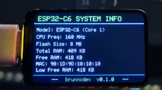

Reconectar sem parar a captura.
As tentativas de reconexão são agendadas. Escritas têm timeout; um envio parcial fecha a porta e a próxima conexão começa com um delimitador.
INSTRUMENTOS PARA QUEM PROGRAMA
Um painel na mesa. Um cabo USB.
CPU, memória e rede do seu PC, com um caminho
aberto entre a leitura e o pixel.
ESP32 · ARDUINO .INO · PYTHON · LICENÇA MIT

Foto do protótipo do autor, exibindo os dados do próprio ESP32. A integração deste firmware com a placa ainda precisa de configuração e teste físico.
Energia e dados pelo USB
Intervalo padrão de coleta
Em pelo menos 90% para alertar
Sem pacote: dados desatualizados
01 / BANCADA DE SESSÕES
Grave uma tarefa no PC. Abra a captura aqui. Percorra as leituras ou compare duas sessões.
O arquivo é lido neste navegador, sem upload.
| SESSÃO | DURAÇÃO | CPU MÉDIA | PICO CPU | PICO RAM | AMOSTRAS EM ALERTA |
|---|
A média considera o tempo entre as amostras. A comparação não isola a causa de lentidão.
Até dois arquivos, 4 MiB e 20.000 amostras por sessão. O site não recebe dados ao vivo da sua máquina.
02 / DO CHECKOUT À BANCADA
O agente coleta métricas reais mesmo sem hardware conectado. Uma captura de 60 segundos já permite experimentar a análise acima.
git clone https://github.com/brunnojob/devpulse-usb.git
cd devpulse-usb
python -m venv .venv
.venv\Scripts\Activate.ps1
python -m pip install -r requirements.txt
python agent.py --record sessao.ndjson --duration 60
Depois, abra sessao.ndjson na bancada. Para o painel físico:
python agent.py --port COM5 (use a porta da sua placa).
CPU, RAM, ocupação de um volume e tráfego agregado. A coleta usa psutil; não há servidor rodando.
O perfil ST7789 é configurável. Controlador, pinos, dimensões e offsets precisam corresponder à sua placa.
Guia de configuração ↗JSON por linha, porta explícita e reconexão com espera progressiva. A tela marca dados desatualizados após cinco segundos.
As tentativas de reconexão são agendadas. Escritas têm timeout; um envio parcial fecha a porta e a próxima conexão começa com um delimitador.
Limite de 255 bytes, validação de métricas e versão do protocolo. O parser C++ descarta uma linha longa e recupera a próxima.
Agente, falhas simuladas de serial, parser C++, análise de sessões e compilação do .ino para ESP32-C6 com perfil temporário de teste. A placa da foto ainda aguarda configuração e validação física.
Ver escopo da validação ↗CONSTRUÍDO EM ABERTO / v0.2